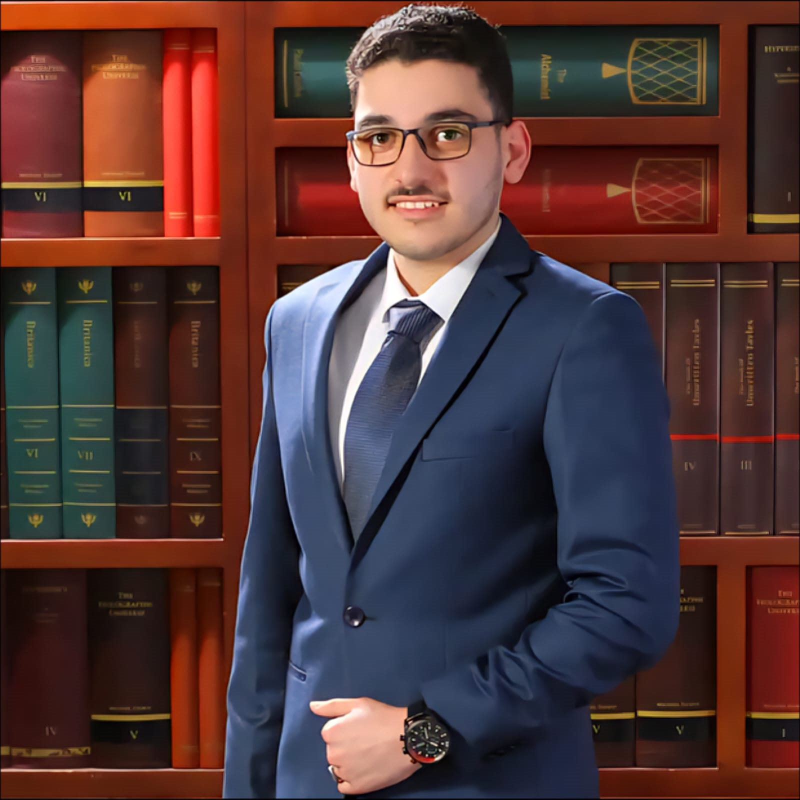

A fourth-year Cybersecurity student at the Jordan University of Science and Technology, passionate about digital forensics, penetration testing, and building secure systems that protect people and organizations.
✉ haabdelwahhab22@cit.just.edu.jo
| # | Name | Category | Reference |
|---|---|---|---|
| 01 | Python | Language | python.org ↗ |
| 02 | Wireshark | Network Analysis | wireshark.org ↗ |
| 03 | Kali Linux | Security OS | kali.org ↗ |
| 04 | Metasploit | Pen Testing | metasploit.com ↗ |
| 05 | Nmap | Network Scanner | nmap.org ↗ |
| 06 | Burp Suite | Web Security | portswigger.net ↗ |
In four years, I envision myself working as a cybersecurity professional specializing in digital forensics and incident response, helping organizations investigate and recover from cyberattacks. I aim to earn industry-recognized certifications such as CEH, OSCP, and CISSP to solidify my expertise and credibility in the field. I am deeply passionate about penetration testing and plan to contribute to red-team engagements that expose vulnerabilities before malicious actors can exploit them. Alongside my professional career, I hope to pursue a Master's degree in Cybersecurity to deepen my theoretical foundation and stay ahead of emerging threats. Ultimately, my goal is to become a trusted security advisor who bridges the gap between technical execution and strategic risk management.